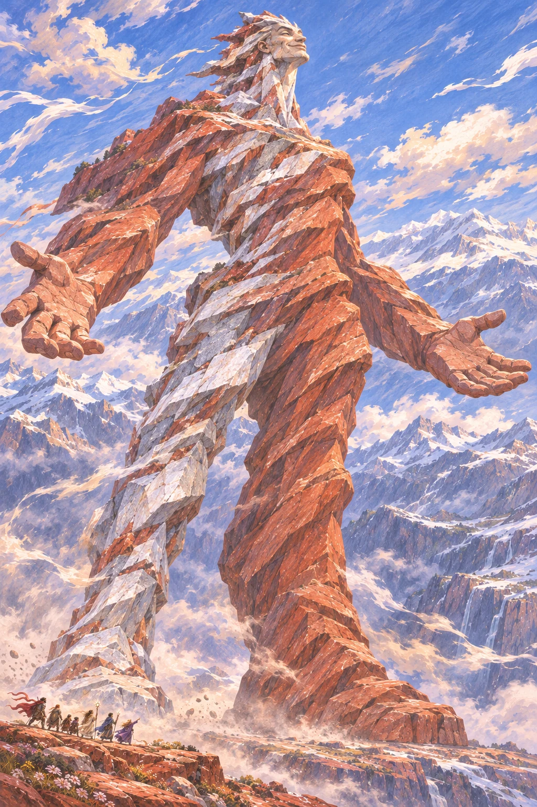

Провести стопу Торвена через Косой мост, когда Ломан впервые сам лежит под местом постановки, и найти приём, который работает теперь.
Ирдо Две ПетлиНеми Длинная ЧертаСафф Полосатый Рукав

ЛоманТорвен
Если партия изменила план
Если Торвен остановился до Косого моста
Сначала спросите, видит ли он Ломана со своего места и кто может ему сообщить о нём. Пока тень стопы не легла на дугу, отсчёт на мосту не начался. Отметьте, за что ходоки потратили выигранное время и где теперь стоят обе горы.
Рассвет. Над Коленным амфитеатром, где все эти дни торчала высокая тонкая верхушка и кто-то кричал о своём росте, — пустое небо. Ни крика, ни свиста; только ветер бежит кругом по пустым уступам. По дну Сухого зева, от амфитеатра к мосту, тянется свежая борозда — длинная и низкая, будто ночью волокли плиту, и по её краям ещё осыпается песок. Ветер гонит пыль через Косой мост, и в швах каменной дуги тонко посвистывает. Камень под ладонями прохладный и шершавый, роса на нём ещё не высохла. По долине ползёт тень: Торвен уже поднимает стопу, и кварцевая полоса на его ребре светлеет в утреннем свете. Ирдо ждёт на ближнем конце моста и складывает верёвку открытой петлёй. «Пыль ляжет — тогда и пойдём», — говорит он и смотрит туда, где вчера стоял Ломан. Там никого нет.
Подготовка и роли
ПЕРЕЛОМ. В ночь после вечера 4 Ломан впервые лёг низко на виду у Венца, прополз Сухим зевом и лёг под дальним широким концом Косого моста — туда, куда сядет стопа Торвена. С этого вечера ложный первый жест и скрытый старт не действуют: он не смотрит, кто начал, он ждёт там, куда придут. Дай приёму сработать как зрелищу, не предупреждай заранее: Ломан даже не поворачивает голову. НОВЫЙ ПРИЁМ: вторая постановка плюс замершая доля. Пока стопа неподвижно висит над ним (горизонтальная лента), правой ноге не на что опереться, и он не встаёт; когда стопа уходит на полку, на четырёх опорах он не успевает. Без замершей доли он встаёт в движущуюся стопу, даже если та сворачивает. ВЕЧЕР: ловушка — стопа Торвена. Постановка Аремы (западный подход к кольцу) разведана без дела, Неми ведёт по карте: «точно» −1. Постановка Торвена (дальний конец) — перейти дугу или пройти полку. Точка общей доли — ближний конец дуги. Встреча «Сколыш на Косом мосту» обязательна, ровно четыре раунда: 3–5 игроков — один сколыш, 6–8 — два; других противников нет. Сколыш на нуле хитов — Л −1 (не больше −2). Ориентиры: точный стол 5→2, Л 3→2 (сбит сколыш; общую долю держит ходок на ближнем конце дуги, он не дерётся); средний 13→13 (Торвен сорван); неудачный 16→16, Л 6→7. Называй полосы вслух. Если стол сам не понял правило, Ирдо называет его в конце. Напасть на Ломана — как в вечер 4: Л +1.
Вечер Лины (если за столом; иначе Яра): с Неми сверяет карту вторых постановок ногами и первой называет полку.
Огняна — внутренняя полка: проходит по ступеням под сколышем и держит ленту до конца раунда 4.
Яр — свист справа под мостом; Сева — знак Торвену и горизонтальная лента, которая держит Ломана внизу.
Сцена 1 · 75 минут
Пустой горизонт
Ближний конец дуги широкий, как стол, а к дальнему она сужается в острое лезвие над расщелиной. Ирдо стоит на последней плите и дальше не ступает: «Наверх не пойду. Открытая высота — не моя. Внутренняя полка — моя». Петля в его руках затягивается и снова раскрывается: «Что видно с края, то видит и ворон. Что видно снизу — то вернёт домой». Сафф поднимает ленту к далёкому лицу Торвена: «Повторю: сегодня шагает Торвен. Постановка — дальний конец. Так?» Кварц светлеет, гул приходит в подошвы: «Так… А где он?.. Не вижу его. Когда не видно… страшнее. Для горы… тоже». Неми сидит на краю с дощечкой: «Арему веду сама: западный подход к кольцу, вторая плита, разведано. А что под мостом — с плеча не видно». Срок назначает Торвен: «Когда пыль… ляжет». Пыль ещё висит, но уже оседает на рукавах. Дел четыре, тени — на три (при 6–8 игроках на все четыре). Приготовить обман или скрытый старт, как вчера: ведущий принимает его без единого слова. Перейти дугу и посмотреть, что лежит под дальним концом: там длинная груда косых плит, которой вчера не было, и из неё тянет свистом, только справа. Найти другое место: спросить Неми или попросить Ирдо провести по полке под острым краем — это одно дело. Договориться с Торвеном через Саффа: «Горизонтальная — висишь над ним. Лента на полке — садись туда». Ирдо щупает ногой край дуги и не идёт дальше: «Камень, который свистит в безветрие… я бы спросил, чей он».
Выборы
Приготовить обычный обход, как в прежние вечера: ложный первый жест Аремы или скрытый старт через щепку. На склоне: Арема поднимает плечо медленно и красиво, весь склон шуршит осыпью. Сафф: «Повторю: она готова. А он… куда он смотрит? Не вижу, куда он смотрит».
Перейти дугу и осмотреть дальний конец: что за груда плит лежит там, где вчера её не было. На склоне: острый край дуги в ладонь шириной, ветер снизу толкает в подошвы. Ирдо с ближнего конца: «Не гляди вниз. Гляди, куда ставишь».
Найти другое место: спросить Неми про вторую постановку и сверить её карту ногами (с картой может работать Лина), или попросить Ирдо провести по внутренней полке. На склоне: ступени полки скользкие от пыли, с острого края над головой сыплется крошка. Неми: «Я всегда рисую вторую постановку. Никто не спрашивал». Ирдо: «Наверх не пойду. А сюда — пойду».
Договориться с Торвеном через Саффа: «горизонтальная — висишь над ним; лента на полке — садись туда». На склоне: полку Торвену надо показать щепкой, а видно её только снизу, с нижней ступени. Торвен: «Висеть… над тем, кого не вижу? Ладно. Висеть… я умею».
Проверка и путь без броска
Обычный обход (ложный жест или скрытый старт через крошку или щепку): готовится как всегда, без броска; ведущий не предупреждает, что он не сработает. Дальний конец: перейти дугу; Мудрость (Внимательность) Сл 14 — груда дышит, между плитами видна плоская ладонь. Провал — ходок задел груду, свист обрывается: Ломан знает, что его нашли, и в бою сколыш ползёт к полке уже с раунда 1. Без броска — из груды свистит ветер, только справа; стол, знающий походку, узнаёт Ломана сам. Постановка Торвена разведана, если дугу перешли или прошли полку. Другое место: без броска Неми отдаёт карту («Карта вторых постановок») и раздатку «Вторые постановки»; Ирдо ведёт по ступеням («Внутренняя полка»). Сила (Атлетика) Сл 11 — пройти полку быстро: в бою ходок с лентой начинает на её нижней ступени; провал — лента упала вниз, ходок начинает бой от ближнего конца. Без броска — полку проходят медленно вдвоём: результат как при успехе, но дело занимает двоих. Договор с Торвеном: Сафф повторяет вслух, гора отвечает гулом, броска нет. Есть договор — в бою Сафф сам держит горизонтальную ленту с раунда 1; нет — её придётся поднять ходоку. Дорожка в сцене 1 не двигается. Седьмой игрок (при 7 за столом), своё дело: с Неми сверить вторую постановку по карте — постановка Торвена разведана без перехода дуги.
Если не получилось
Если груду под дальним концом не нашли, она находится в бою: Ломан расправляется на глазах у всех, ничего не потеряно, кроме времени. Если Неми не спросили, она сама протягивает карту, увидев, что ходоки топчутся у острого края: «Вам нужно другое место, да? Северо-восток, под лезвием». Если не договорились с Торвеном, Сафф в бою кричит, что надо держать горизонтальную, и кто-то на ближнем конце должен её поднять. Если обман готовили, дело потрачено, но стол своими глазами увидит перелом: это и есть его цена.
Сцена 2 · 75 минут
Стопа над Косым мостом
Пыль легла. Тень стопы Торвена накрывает мост, и дуга вздрагивает: подъём. Через долину кренится ребро, мост гудит под сапогами, ветер бьёт снизу из расщелины. Если готовили обман, он вспыхивает во всей красе: Арема поднимает плечо, будто шагает первой, или «сейчас» уходит через щепку тайком. И — ничего. Никто не бросается в пустой воздух. Ломан даже не поворачивает голову: на горизонте нет никакой головы. Груда под дальним концом разворачивается: две плоские ладони, левая нога, правое колено, длинная красная спина, высокая пёстрая плита поперёк плеч. Ломан впервые на виду у всех — низкий, на четырёх опорах. В правом колене свистит. «Не смотрите. Внизу я… длинный. Ни одной вершины». И громче, срываясь: «Я не жду, кто начнёт! Я лежу, куда придёте! Не ждали? Не ждали!» Из расщелины выползает сколыш (при 6–8 игроках — два, по одному на переход) — начинается встреча «Сколыш на Косом мосту». Через долину Арема: «Иду… по карте девочки. Хорошая… карта». Ведущий кладёт на стол четыре черты: «Стопа сядет в конце четвёртого раунда». Сафф с ближнего конца: «Повторю: горизонтальная — жди над ним. Так?» Торвен: «Держу… над ним». Ирдо уже внизу, на ступенях полки: «Левее! Нижняя ступень — тоже ступень!» В третьем раунде упавшая плита-переход с хрустом съезжает в расщелину на ладонь. Пока стопа висит неподвижно, Ломан тянется вверх, правая нога шарит по воздуху и не находит размаха: «Ну же… ну…»
Выборы
Держать вторую постановку: дойти по полке до северо-восточного угла и стоять там с поднятой лентой к концу раунда 4.
Держать стопу неподвижной: поднять горизонтальную ленту с ближнего конца в раунде 1 или 2, если с Торвеном не договорились.
Сгонять сколыша с переходов и с полки, прикрывая того, кто идёт с лентой.
Стоять на ближнем конце дуги с поднятой лентой для общей доли и не ввязываться в бой.
Сложить ленту в конце раунда 4, если полку не удержали: стопа уходит назад, Ломан остаётся лежать.
Проверка и путь без броска
Встреча «Сколыш на Косом мосту» (обязательная, ровно четыре раунда; 3–5 игроков — один сколыш, 6–8 — два). Подъём перед боем: Сила (Атлетика) Сл 12; провал — съехать на нижнюю ступень полки без вреда и начать бой там; без броска — верёвка с петлёй. Замершая доля: есть договор с Торвеном — Сафф держит горизонтальную ленту с раунда 1, стопа висит все четыре раунда. Нет — ходок на ближнем конце поднимает её своим действием в раунде 1 или 2; иначе стопа идёт вниз, и в конце раунда 4 Ломан встаёт в неё, куда бы она ни свернула. Раунд 3: упавшая плита-переход съезжает — до конца боя она труднопроходима, стоящий на ней проходит Ловкость Сл 12 или съезжает на нижнюю ступень полки. Конец раунда 4: стопа висела неподвижно, на полке ходок с поднятой лентой и нет сколыша — Торвен садится на полку: «точно», Р −1 (ходок на полке и есть разведка). Иначе стол выбирает: сложенная лента — «сорвана», Р +1; ничего — «украдена», Р +1, Л +1 (порядок результатов: сорвана +1 → украдена +1 и Л +1 → ушиблена +2 → села сама 0 → точно −1). Стопа Аремы без ловушки (Неми по карте): «точно», Р −1. Общая доля −1: обе «точно», знаки согласованы, и в конце раунда 4 на ближнем конце дуги поднята лента (при Р 12–17 — две; эти ходоки не дерутся). Сколыш на нуле хитов: Л −1 (не больше −2). Ведущий называет итог вслух и двигает отметки.
Если не получилось
Сорвавшийся в бою соскальзывает на нижнюю ступень полки, где его ловит Ирдо: «Нижняя ступень — не падение. Дыши». Если полку не нашли в сцене 1, Ирдо в раунде 1 кричит снизу, где проход, и ходок идёт от ближнего конца, а не со ступеней. Если полку не удержали, стол в конце раунда 4 решает вслух. Сложенная лента: стопа уходит назад, Ломан остаётся лежать, «сорвана», +1. Ничего: Ломан встаёт в стопу Торвена во весь новый рост: «Вот! Ещё на плиту! Заметили? Заметили!» — +1 и Л +1, и ведущий называет новую полосу роста.
Внутренняя полка
Под острым краем Косого моста, если заглянуть снизу, тянется широкая неровная полоса со ступенями, будто в дуге вырублен второй ход. Сверху и с острого края её не видно; в трещинах ступеней растёт сухой мох.
Что можно установить
Это вторая постановка для стопы Торвена: по полке можно пройти от ближнего конца к дальнему, не прыгая. Её не видно сверху и со стороны острого края.
Получение
Попросить Ирдо провести по полке или осмотреть её с ближнего конца дуги, заглянув под острый край. Бросок не нужен.
Запасной путь
В бою Ирдо кричит с полки, где проход, и показывает нижнюю ступень; её открывают до выбора прыжка.
Шаг без ведущего
Под дальним концом дуги груда плит расправляется в длинную низкую фигуру на четырёх опорах с плитой поперёк плеч.
Что можно установить
Ломан ходит сам и низко. Встать он может только в движущуюся стопу или осыпь; пока стопа неподвижна над ним, правой ноге не на что опереться. Он больше не ждёт того, кто начнёт, а лежит там, куда придут.
Получение
Это видят все в сцене 2 вечера 5, когда груда разворачивается под мостом; наблюдать, как он встаёт или не может встать. Бросок не нужен.
Запасной путь
В вечер 6 Век рассказывает, как ночью через кольцо прополз длинный низкий камень, и передаёт записку.
Изменения после решений
Если Полку удержали (стопа Торвена «точно»). → В вечер 6 Ломан прячется за центральной россыпью Разомкнутого кольца и ложится у главной постановки Аремы только в темноте; Век видел, как он полз.
Если Стопу Торвена украли. → В вечер 6 на второй постановке Аремы, у западного выхода кольца, сидит сколыш; согнать его — дело с Веком без броска, или ставить стопу в другом месте.
Если Стол готовил обычный обход и видел, что он не сработал. → Потеряно только дело: стол своими глазами видел перелом. В конце вечера ведущий всё равно называет новое правило вслух.
Мост вздрагивает: стопа Торвена садится. Если полку удержали, Ломан поднимается в пустой воздух, правая нога не находит размаха, высокая плита съезжает с плеч, и он на глазах у всех уползает под мост, волоча её за собой. Если отдали — он встаёт в стопу с рёвом во весь новый рост, и тень его ложится на дугу. На внутренней полке Ирдо складывает петлю: «Он больше не ждёт, кто начнёт. Он ждёт, куда вы придёте. Значит… приходите в два места». Ведущий говорит вслух: с этого вечера ложный первый жест и скрытый старт не действуют; нужны вторая постановка и замершая доля. Карандаш двигается при всех.